Learning Objectives
R is an extremely powerful programming language for working with datasets, applying statistics and creating publication ready graphics. In this lesson you will learn how to program in R and use the RStudio environment. We will cover the basics of the R syntax using built in packages (base R), as well as importing data, creating simple graphics and running statistical tests.
It’s free!
It’s Powerful. Many libraries have been created to perform application specific tasks. e.g. Next-Gen sequencing (bioconductor).
Packages available for storing, manipulating and visualising data in a sensible fashion (Tidyverse)
Presentation quality graphics
Persistent data analysis history
RStudio provides an interactive environment for working in R.
R markdown can generate documents to present your code, annotation and results in useful reports.
Shiny can produce interactive applications for exploratory data analysis.
Working directory
Data types
Vector
Data Frame
Matrix
R is a functional based language:
Typical command:
Function(data, options, moreOptions)Example of plotting speed against stopping distance with the inbuilt cars dataset:
plot(cars, xlab="Car Speed (mph)", ylab="Stopping Distance (ft)")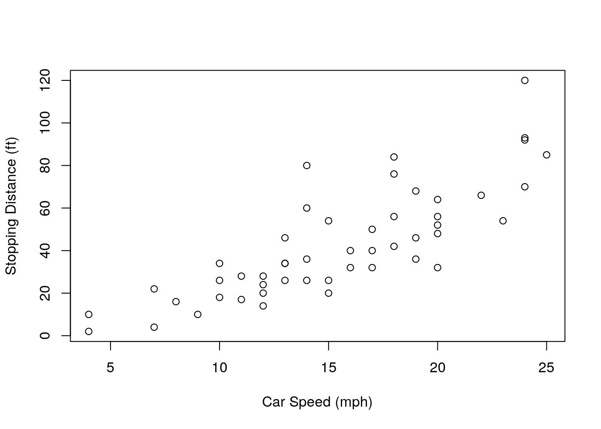
We can store the output of a function as an object.
result = Function(data, options, moreOptions)Example: Store the output of the summary function. You will see the object sum_cars appear in your Environment tab.
sum_cars = summary(cars)To see what an object holds, just type its name:
sum_cars## speed dist
## Min. : 4.0 Min. : 2.00
## 1st Qu.:12.0 1st Qu.: 26.00
## Median :15.0 Median : 36.00
## Mean :15.4 Mean : 42.98
## 3rd Qu.:19.0 3rd Qu.: 56.00
## Max. :25.0 Max. :120.00Not all functions need arguments, e.g. get working directory function
getwd()If you want to change the working directory: Use setwd("/path/to/new_directory") or use the session menu in RStudio.
Help is also a function:
help(read.table)This provides the help page for the function read.table
help.search("t test")Searches for help pages that might relate to the phrase ‘t test’.
NOTE quotes are needed for strings (character text), they are not needed when referring to data objects or the name of a function.
There is a short cut for help, ?, which shows the help page for a function: same as help(function)
?read.table?? searches for help pages on functions, same as help.search(‘phrase’)
??'t test'Information is usually returned from a function, by default this is printed as output in the console screen:
read.table('http://bifx-core.bio.ed.ac.uk/data.tsv')The read.table function reads in files as an R dataframe. We can store this as an object:
mydata <- read.table('http://bifx-core.bio.ed.ac.uk/data.tsv')Here, mydata is an object name and the syntax <- assigns the output of the function to it.
You could also use the equals sign =.
mydata = read.table('http://bifx-core.bio.ed.ac.uk/data.tsv')Key points
For a beginner, this can be the hardest part, it is also the most important part to get right.
It is possible to create a vector by typing data directly into R using the combine function c. Think of it as a concatenate or combine function.
x <- c(1,2,3,4,5)This creates the vector x with the numbers between 1 and 5.
You can see what is in an object at any time by typing its name;
x## [1] 1 2 3 4 5Note that text needs to be quoted, otherwise R will look for a data object of that name.
daysofweek <- c('Monday', 'Tuesday', 'Wednesday', 'Thursday', 'Friday')Usually however you want to input from a file. You can read files on your computer or from a URL. We have touched on the read.table function already.
mydata <- read.table('http://bifx-core.bio.ed.ac.uk/data.tsv')Now mydata is a dataframe with multiple vectors.
We can look at our table by typing it’s name, but this prints a lot of rows. Using head() only prints a few lines;
head(mydata, n=5)You can also use the View() command to open data frames in the file pane.
Hmmm, something isn’t right with our rows here…
By default the function assumes certain things from the file
If any of these are false, we need to tell that to the function. If it has a header column use ‘header=TRUE’:
mydata <- read.table('http://bifx-core.bio.ed.ac.uk/data.tsv', header=TRUE) # header=T also worksNote the comma between different parts of the functions arguments.
This overwrites our previous table and now we should have headers:
head(mydata, n=5)If there is one less column in the header row, then R assumes that the 1st column of data after the header are the row names.
Each column can be identified by the using the $ sign (mydata$A mydata$B etc.)
If any of these are typed it will print to screen:
mydata$A## [1] 1 2 2 3 3 3 3 3 4 4 4 4 4 4 4 4 4 5 5 5 5 6 6 6 7 7 8Use sep= to define how your columns are separated in the file:
mydata <- read.table('http://bifx-core.bio.ed.ac.uk/data.tsv', header=T, sep='\t')Tab separated files are really useful if you expect to have spaces in the contents of some columns. You need to tell R if your files are separated by the tab character to avoid messing up the reading of columns.
If there is missing data in any of your columns, use fill=TRUE.
mydata <- read.table('http://bifx-core.bio.ed.ac.uk/data.tsv', header=T, sep='\t', fill=TRUE)This causes R to fill empty spaces in columns with ‘NA’.
The last two examples will still work with our file and give the same result.
As this is such a common task there are functions identical to read.table but with different default settings. e.g. read.delim and read.csv. Check out the help pages for each.
In the Environment pane in RStudio there is a button called “Import Dataset”. This can make importing data much easier and calls the read.* set of functions for you. The command used will be displayed on the console. Note that you need to have the file on the computer to use this button.
summary(mydata) # Summary of the whole data frame ## A B C D
## Min. :1.000 Min. : 4.000 Min. :1.000 Min. :1.000
## 1st Qu.:3.000 1st Qu.: 6.000 1st Qu.:1.000 1st Qu.:2.000
## Median :4.000 Median : 7.000 Median :1.000 Median :3.000
## Mean :4.296 Mean : 7.296 Mean :1.778 Mean :3.333
## 3rd Qu.:5.000 3rd Qu.: 8.000 3rd Qu.:2.000 3rd Qu.:4.000
## Max. :8.000 Max. :11.000 Max. :5.000 Max. :9.000
## E
## Min. :1.000
## 1st Qu.:3.500
## Median :4.000
## Mean :4.407
## 3rd Qu.:5.000
## Max. :8.000summary(mydata$A) # Summary information of column A ## Min. 1st Qu. Median Mean 3rd Qu. Max.
## 1.000 3.000 4.000 4.296 5.000 8.000We can use a shortcut to avoid typing the name of the data frame each time by attaching it.
attach(mydata)summary(A) # same as above as 'mydata' is attached## Min. 1st Qu. Median Mean 3rd Qu. Max.
## 1.000 3.000 4.000 4.296 5.000 8.000mean(A) # There are many functions for summarising data in R including mean, median, min, max. Play around with these.## [1] 4.296296order(A) # The order function sorts a vector.## [1] 1 2 3 4 5 6 7 8 9 10 11 12 13 14 15 16 17 18 19 20 21 22 23 24 25
## [26] 26 27We can access specific rows, columns and cells within a table using square brackets: TABLE[ROW,COLUMN]. Try out the following commands.
##Print the value in the first column of the first row
mydata[1,1]
##Use blanks to print an entire row or column
mydata[2,]
mydata[,3]
##You can select multiple rows and columns with ranges (:) or the c() function
mydata[1:5,c(3,5)]
##You can also use row or column names
mydata[,"B"]
##You can select rows or columns based on criteria (subsetting).
mydata[mydata$B>7,]Challenge:
Solution:
mydata[11,3]## [1] 1mydata[D==4,] # Or mydata[mydata$D==4,]mydata[B==max(B), ]mydata[seq(2,26, by = 2), ]mydata[, c(1,3,5)] # Or mydata[,c('A','C','E')] mydata[order(mydata$B, decreasing = TRUE), ]There is a subset() function in R specifically for subsetting tables. This generally works better than using square brackets as it copes with NA and NULL values:
subset(mydata,mydata$C==3)However, we will see later on that the tidyverse packages have their own set of functions for filtering datasets.
We recommend learning ggplot2 for graphics but it is useful to know the options available in “base” R. Remember, to get more information about the options available to a function, type ?function.
hist(mydata$A)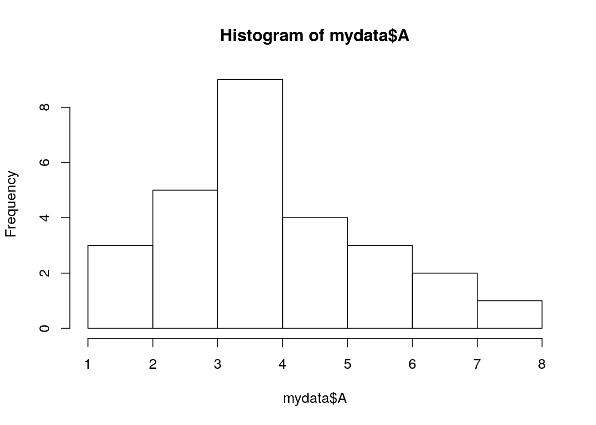
If there was more data, like in this large collection of chick weights (another dataset built into R), we can increase the number of vertical columns with the option, breaks=50 (or another relevant number).
hist(ChickWeight$weight, breaks=5)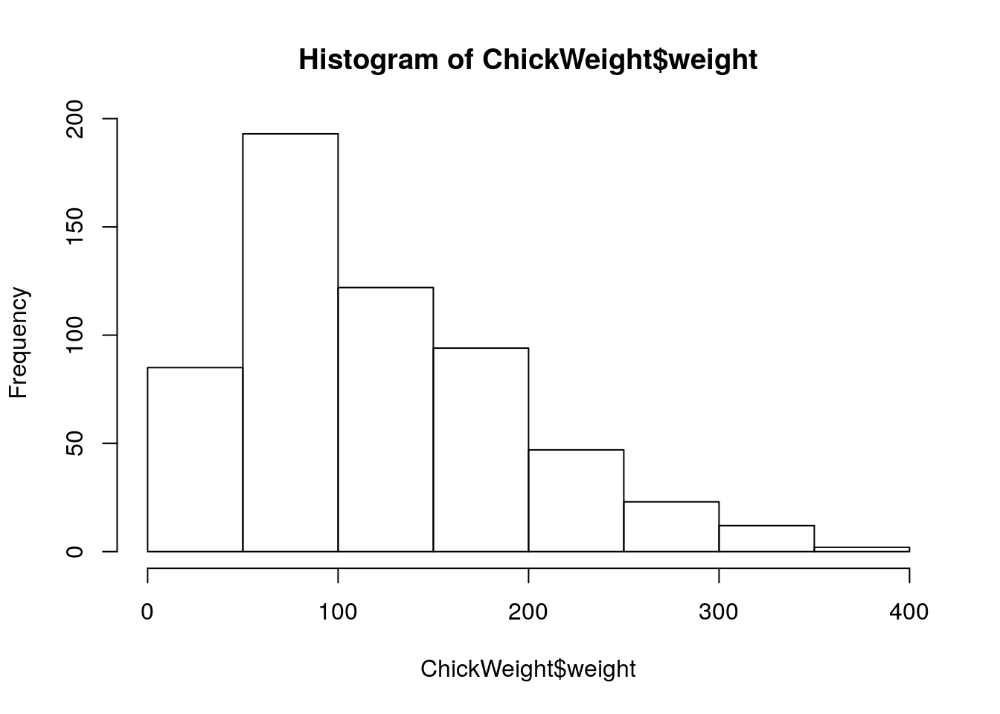
hist(ChickWeight$weight, breaks=50)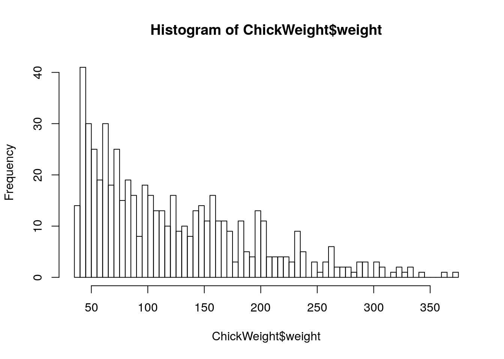
boxplot(mydata)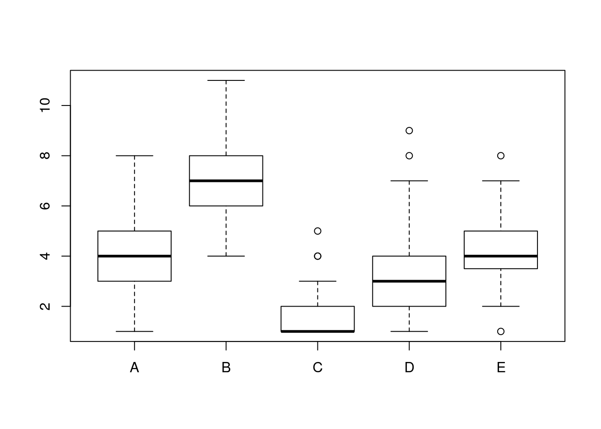
boxplot(mydata$A, mydata$B, names=c("Value A", "Value B") , ylab="Count of Something")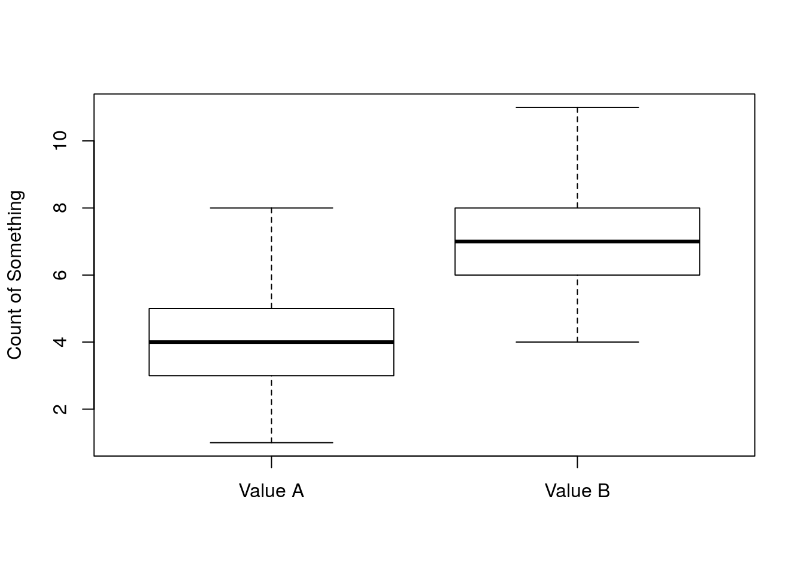
We can get rid of the need to type the data frame each time by using the attach function
attach(mydata) # if not already done so
boxplot(A, B, names=c("Value A", "Value B") , ylab="Count of Something")Note that the opposite function of attach is detach
detach(mydata)attach(mydata) # Re-attach if neededplot(A,B) # i.e. plot(mydata$A, mydata$B)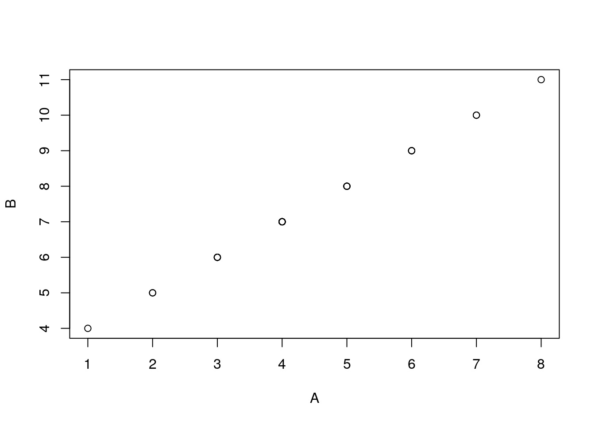
There are a few ways to save images:
You need to create a new device of the type of file you need, then send the data to that device.
To save as a png file (easy to load into the likes of powerpoint, also great for web applications).
png('filename.png')
boxplot(A, B, names=c("Value A", "Value B") , ylab="Count of Something")
dev.off()OR to save as a pdf
pdf('filename.pdf')
boxplot(A, B, names=c("Value A", "Value B") , ylab="Count of Something")
dev.off()Note that nothing will appear on screen, the output is going to the file, dev.off() here stops the device and saves the file.
R has many functions for statistical testing.
Further Resources
Please see our introduction to statistics document for more information on distributions, hypothesis testing and statistical significance.
Let’s say we want to determine whether the means of two groups of data differ statistically. First, we need to know if we are dealing with parametric or non-parametric data, i.e. are they normally distributed?
Challenge:
Plot a histogram for each vector in mydata to visualise the distributions of each dataset.
Solution:
hist(A, breaks=5)hist(B, breaks=5)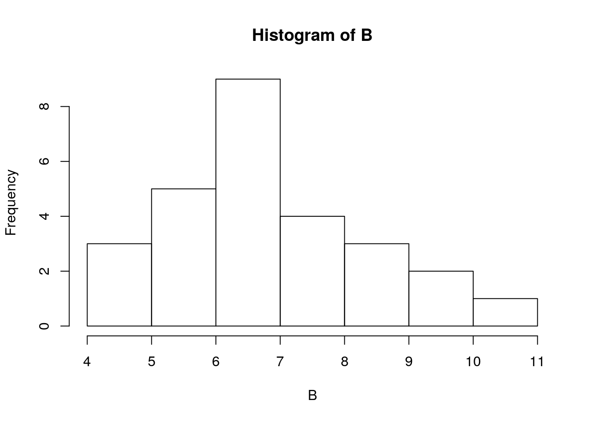
hist(C, breaks=5)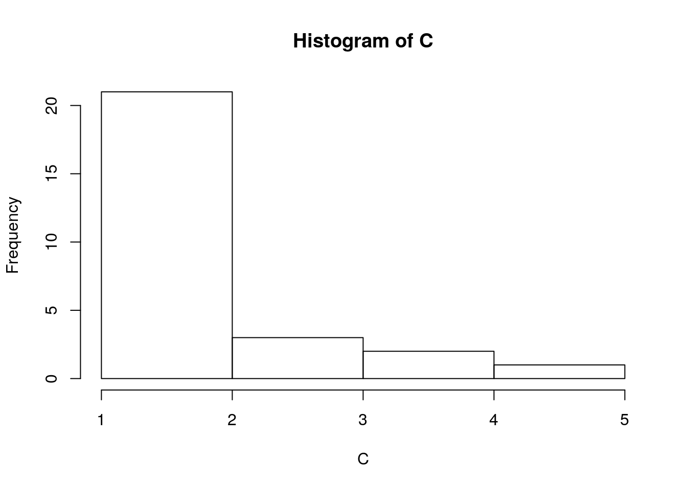
hist(D, breaks=5)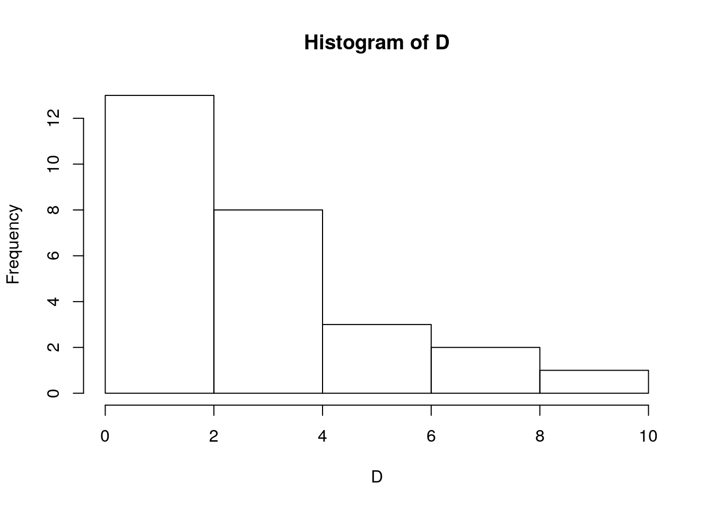
hist(E, breaks=5)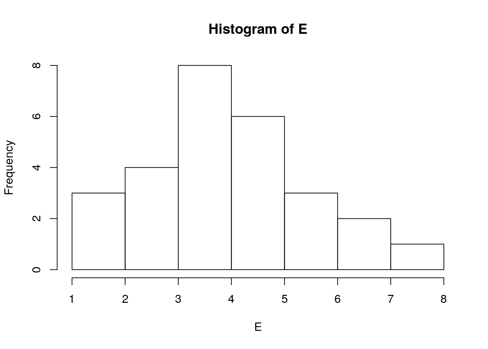
How does the data look? Do any datasets appear to be normally distributed? We can test for normality with the Shapiro Wilk test. Let’s do this for column A:
shapiro.test(A)##
## Shapiro-Wilk normality test
##
## data: A
## W = 0.95663, p-value = 0.3088The null hypothesis in the Shapiro Wilk test is that our data does not differ significantly from a normal distribution. So, a significant p-value (p < 0.05) means that the data is NOT normally distributed. As p here = 0.3088 (> 0.05), we conclude that A is normally distributed and we can use a parametric test.
Challenge:
Which other columns are normally distributed?
Solution:
shapiro.test(A)##
## Shapiro-Wilk normality test
##
## data: A
## W = 0.95663, p-value = 0.3088shapiro.test(B)##
## Shapiro-Wilk normality test
##
## data: B
## W = 0.95663, p-value = 0.3088shapiro.test(C)##
## Shapiro-Wilk normality test
##
## data: C
## W = 0.71936, p-value = 7.294e-06shapiro.test(D)##
## Shapiro-Wilk normality test
##
## data: D
## W = 0.84078, p-value = 0.0007608shapiro.test(E)##
## Shapiro-Wilk normality test
##
## data: E
## W = 0.96665, p-value = 0.5162A, B & E are parametric datasets.
Key points
You should only use parametric tests for parametric data!
The assumption for a t-test is that both groups are sampled from normal distributions with approximately equal variance. We can only use this test if the data is normally distributed. As columns A and E are both normally distributed we can use a Two Sample t-test to test if the mean values are statistically different. Our null hypothesis is that the two means are equal, and the alternative is that they are not.
If our p-value is less than the significance level 0.05, we can reject the null hypothesis and accept the alternative hypothesis. In other words, we can conclude that the mean values of group A and E are significantly different.
Challenge:
Use a t-test to decide if the mean values of A and E differ more than is expected by random chance. Hint: Use the help search to find the t-test function.
Solution:
t.test(A,E)##
## Welch Two Sample t-test
##
## data: A and E
## t = -0.25047, df = 51.997, p-value = 0.8032
## alternative hypothesis: true difference in means is not equal to 0
## 95 percent confidence interval:
## -1.0012865 0.7790643
## sample estimates:
## mean of x mean of y
## 4.296296 4.407407The p-value of the test is 0.8032, which is greater than the significance level 0.05. We can conclude that A and E are NOT significantly different. You can also save the result as an object and print the p-value:
a_e_result <- t.test(A,E)
a_e_result$p.value## [1] 0.8032119Discussion
Are any other (parametric) columns significantly different from each other?
What if we want to test non-parametric data? As D is NOT normally distributed we need to use a non-parametric test. Here we use the Mann-Whitney U test aka wilcox.test:
wilcox.test(A,D) ##
## Wilcoxon rank sum test with continuity correction
##
## data: A and D
## W = 503.5, p-value = 0.01496
## alternative hypothesis: true location shift is not equal to 0Non parametric tests look at the ranks of values. If the same value appears multiple times the ranks will be tied and R will output a warning. We can ignore it in this case but should be wary if there are many ties in our data.
The p-value of the test is 0.01496, which is less than the significance level alpha = 0.05. We can conclude that A is significantly different from D.
Paired data are sets of data in the same row that came from the same sample (e.g. time series data).
Load the paired dataset, ‘weight.tsv’, which contains weights of mice before and after a treatment.
weight <- read.table('http://bifx-core.bio.ed.ac.uk/weight.tsv', header=TRUE)
weightPlot out the data.
boxplot(weight)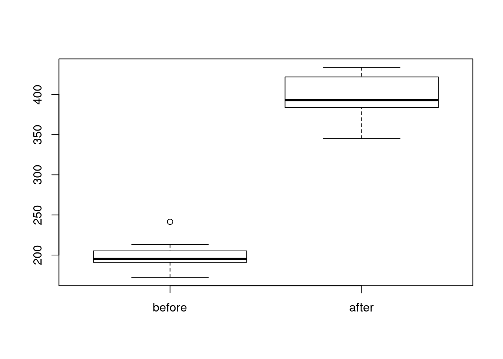
Again, before testing we first check for normality. Here we are comparing the differences between groups (Weight after MINUS Weight before).
weight$after - weight$before## [1] 192.8 202.3 152.4 180.0 192.6 231.0 249.8 198.4 187.1 158.5We can add this as a new column called ‘diff’ to our table
weight$diff <- weight$after - weight$before
weightshapiro.test(weight$diff)##
## Shapiro-Wilk normality test
##
## data: weight$diff
## W = 0.94536, p-value = 0.6141Looks good, the p-value is greater than 0.05 implying that the distribution of the differences (d) are not significantly different from the normal distribution. In other words, we can assume normality.
We want to know if the weights before treatment are significantly different to the weights after. Let’s run the t-test. If the data is paired we use the option paired=true.
t.test(weight$before, weight$after, paired = TRUE)##
## Paired t-test
##
## data: weight$before and weight$after
## t = -20.883, df = 9, p-value = 6.2e-09
## alternative hypothesis: true difference in means is not equal to 0
## 95 percent confidence interval:
## -215.5581 -173.4219
## sample estimates:
## mean of the differences
## -194.49The p-value is 6.2e-09 (< = 0.05) so we can then reject null hypothesis and conclude that the average weight of the mice after treatment is significantly different from the average weight before treatment.
In the case of a non parametric paired data set, use a paired Mann-Whitney Wilcoxon test aka Wilcoxon Signed Rank Test e.g wilcox.test(x, y, paired = TRUE).
Discussion
Have a llok at the other parameters of the t.test() function. What do you think these do?
If you run multiple statistical tests on the same data then the probability of finding your results changes and you must adjust your p-values to compensate. This is known as multiple testing correction. The easiest method is to use the function p.adjust(x), where x is a list of p-values. There is a method parameter to choose between different correction parameters. e.g.
pvals = c(0.0001, 0.05, 0.001, 0.1, 0.1, 0.1, 0.1,0.5,0.5,0.5)
p.adjust(pvals)## [1] 0.001 0.400 0.009 0.700 0.700 0.700 0.700 1.000 1.000 1.000A matrix is a data frame where the values in rows and columns represent the same data type. You can turn a data frame into a matrix using the as.matrix() function.
mymatrix <- as.matrix(mydata)Or create one from a vector using the matrix() function (See ?matrix).
lst <- c(54,66,80,20)
twoBytwo <- matrix(lst, nrow=2)Which gives:
twoBytwo## [,1] [,2]
## [1,] 54 80
## [2,] 66 20Now the matrix is saved and is called twoBytwo.
Note: nrow specifies the number of rows (alternatively you can specify the number of columns by ncol). The default parameters assume numbers in the list fill the first column, then fill the second column and so on. This can be changed by the byrow argument.
We can place count based data in a matrix to perform statistical tests. For instance, when observing the presence of a fluorescent marker in wild-type and mutant cells we want to know if there is a significant difference between the 2 cell types?
Wild type cells with marker present: 54
Wild type cells with marker absent: 66
Mutant cells with marker present: 80
Mutant cells with marker absent: 20Fortunately we have this already in the twoBytwo matrix, and the values in lst.
You can change the default column and row names with the colnames and rownames function:
colnames(twoBytwo) <- c('WT', 'Mut')rownames(twoBytwo) <- c('pres', 'abs')twoBytwo## WT Mut
## pres 54 80
## abs 66 20The Chi-squared test, R function chisq.test(), works on matrices. It is a type of likelihood ratio test:
chisq.test(twoBytwo)##
## Pearson's Chi-squared test with Yates' continuity correction
##
## data: twoBytwo
## X-squared = 26.612, df = 1, p-value = 2.486e-07As the p-value 0.0000002486 is less than 0.05, we can reject the null hypothesis and conclude that these cell types are significantly different.
Note if values in any box were small (e.g. <=5) then Fisher’s exact test should be used:
fisher.test(twoBytwo)##
## Fisher's Exact Test for Count Data
##
## data: twoBytwo
## p-value = 1.029e-07
## alternative hypothesis: true odds ratio is not equal to 1
## 95 percent confidence interval:
## 0.1055182 0.3899188
## sample estimates:
## odds ratio
## 0.2061251This is recommended over the Chi-square in general as the test is more robust, although Fishers exact test only works on two-by-two matrices. If we have more groups we have to use a Chi-square.
Final Challenge:
In this challenge we are going to perform statistical analysis to see if the weights of 10 rabbits increase after a hypothetical experimental treatment. First prepare the data:
# The data set
# Weight of the rabbit before treatment
before <-c(190.1, 190.9, 172.7, 213, 231.4,
196.9, 172.2, 285.5, 225.2, 113.7)
# Weight of the rabbit after treatment
after <-c(392.9, 313.2, 345.1, 393, 434,
227.9, 422, 383.9, 392.3, 801.2)
# Create a data frame
rabbits <- data.frame(
sample=c(1:10), ##Assign sampleIDs
before=before,
after=after
)Solution:
Visualise:
boxplot(rabbits$before,rabbits$after)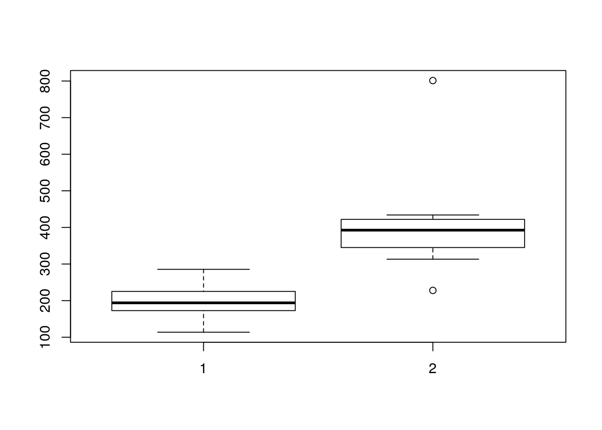
Test for normality:
shapiro.test(rabbits$after-rabbits$before)##
## Shapiro-Wilk normality test
##
## data: rabbits$after - rabbits$before
## W = 0.70287, p-value = 0.0009544We reject the Null hypothesis that the difference in weights is normally distributed, so we must use a non parametric test.
The data is paired and our null hypothesis is that the weight after treatment is not greater than the weight before. We therefore have a one-sided test and use “greater” as our alternative hypothesis. We include the option to produce confidence intervals:
wilcox.test(rabbits$after, rabbits$before, paired = TRUE,alternative = "greater",conf.int = T) ##
## Wilcoxon signed rank test
##
## data: rabbits$after and rabbits$before
## V = 55, p-value = 0.0009766
## alternative hypothesis: true location shift is greater than 0
## 95 percent confidence interval:
## 122.3 Inf
## sample estimates:
## (pseudo)median
## 176.2The rstatix package is useful for applying statistical tests on tables of data and is compatible with the Tidy data structures and pipes that you will learn later on in these lessons. Here is an example which you can return to later.
## Use the ToothGrowth dataset built into R
library(rstatix)
library(ggpubr)
df <- ToothGrowth
df$dose <- as.factor(df$dose)
head(df)## Group the data by dose and run a t_test between the two groups for each dose.
stat.test <- df %>%
group_by(dose) %>%
t_test(len ~ supp) %>%
adjust_pvalue() %>%
add_significance("p.adj")
stat.test## Plot out the results and add adjusted p-value
ggboxplot(
df, x = "supp", y = "len",
color = "supp", palette = "jco", facet.by = "dose",
ylim = c(0, 40)
) +
stat_pvalue_manual(stat.test, label = "p.adj", y.position = 35)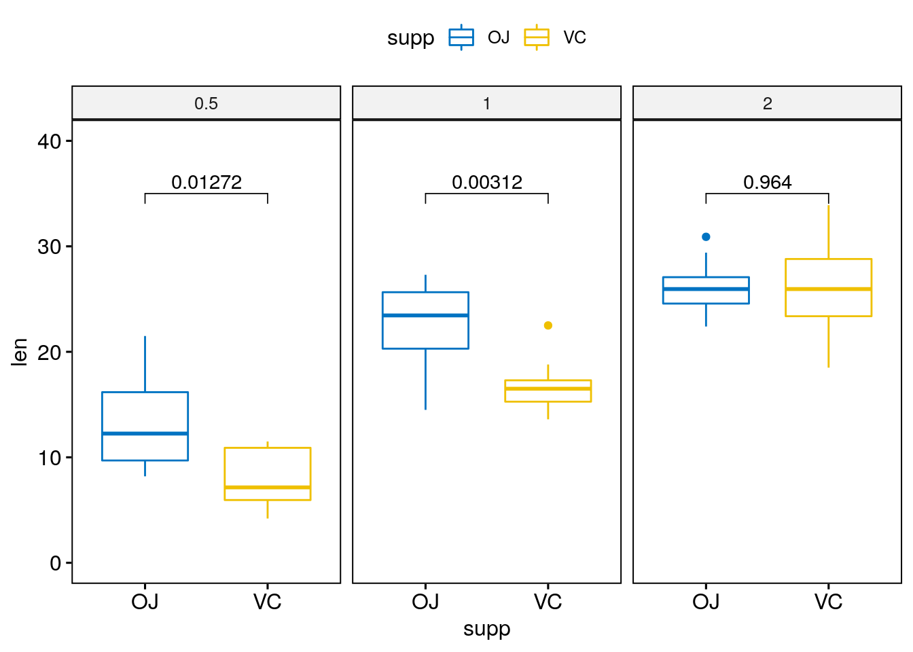
Key points